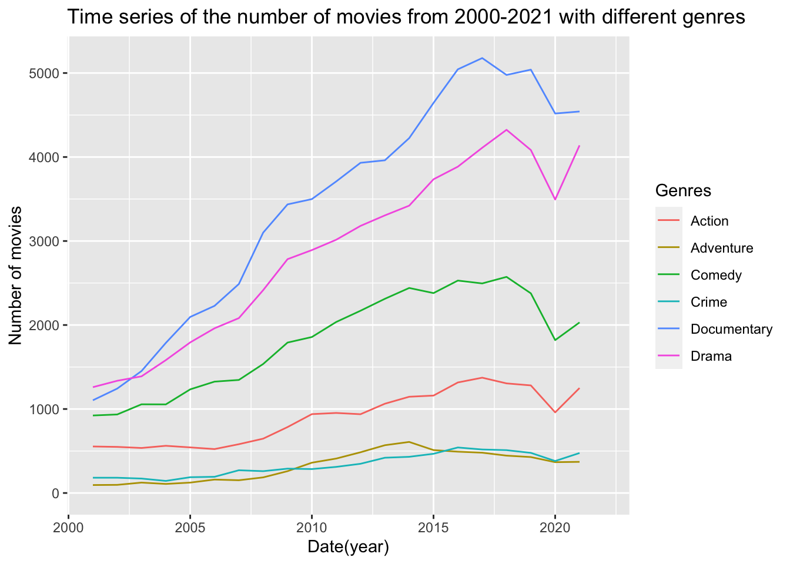
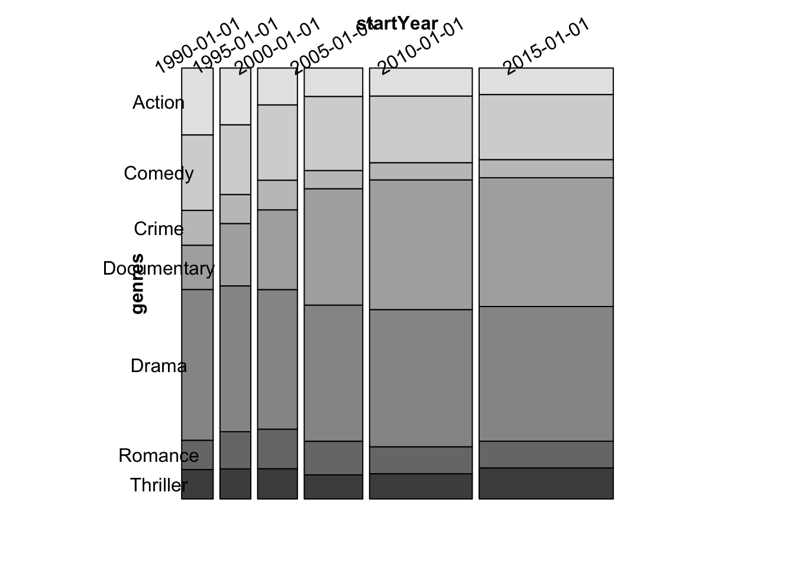
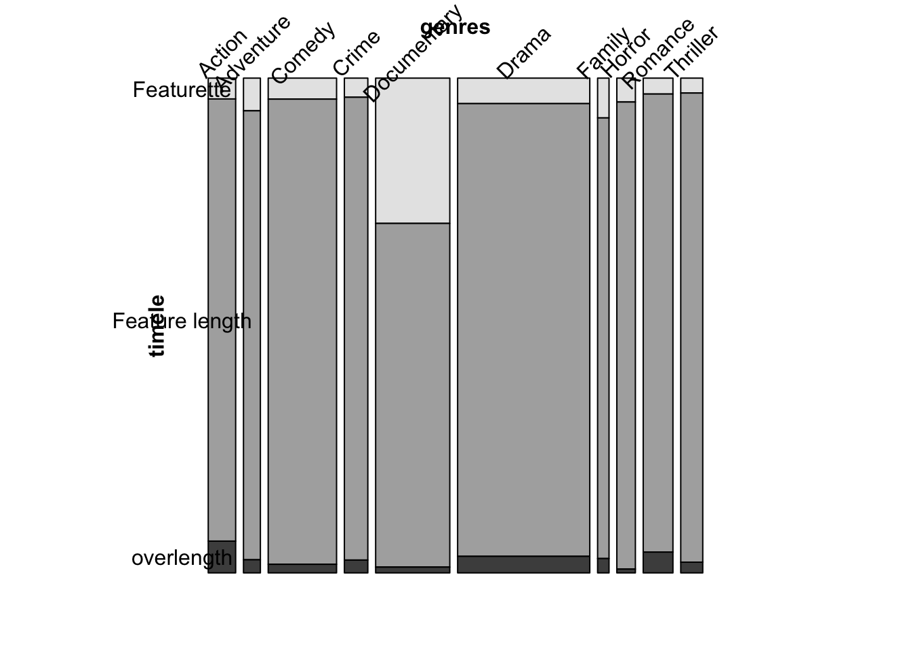

Chapter 5 Results
5.1 library
library(bookdown)
library(tidyverse)
library(lubridate)
library(ggplot2)
library(parcoords)
library(redav)
library(GGally)
library(plotly)5.2 Read data
imdb_movie<-read_csv("data/imdb_movie.csv")
boxo<-read_csv("data/imdb_Top800Movie_data.csv")
box1721<-read_csv("data/imdb_20172021boxoffice_data.csv")
yearlybox<-read_csv("data/imdb_yearlyboxoffice.csv")5.3 In what ways has COVID-19 affected the film industry
5.3.1 Trend of Count for different genres :
top10<-imdb_movie%>%drop_na(startYear,g1)%>%group_by(g1)%>%summarise(count=n())%>%arrange(desc(count))%>%head(6)%>%pull(g1)
imdb_year_g<-imdb_movie%>%drop_na(startYear,g1)%>%filter(g1 %in% top10)%>%group_by(startYear,g1)%>%summarise(count=n())
imdb_year_g%>%
ggplot(aes(x=startYear,y=count,group=g1,color=g1))+
#geom_point()+
geom_line()+
#facet_wrap(~g1,scales = "free_y")+
scale_x_date(limits = c(ymd("2000-12-31"), ymd("2021-12-31"))) +
labs(title="Time series of the number of movies from 2000-2021 with different genres",
x="Date(year)",
y="Number of movies",
color="Genres")
Explanation of the graph:
Here, we want to find the time trends in the number of films in different types. From the plot of missing values, we can see the total number of documentary films has been almost consistently the highest in 20 years, while the number of adventure and crime films has been the lowest. This may be because documentaries are more popular in the market and cheaper to make. In addition, we can see that from 2020 to 2018, the number of films released in different categories increased steadily, but there was a relatively large decline in 2020, which is probably due to the impact of COVID-19 in 2019-2020, which caused the entire film industry to enter a winter period. Rising filming costs, falling cinema attendance, the absence of actors due to the pandemic and stringent controls in different countries are all important factors. However, we can also see new opportunities for the film industry in 2021, with an increase in the number of films of all types, which cannot be achieved without the effective control of the epidemic worldwide and the research and development of vaccines.
5.3.2 Total Box Office Trend:
yearlybox%>%
ggplot(aes(x=Year,y=Total))+
geom_line()+
annotate("rect",xmin=2019,xmax=2020,ymin =2103088090 ,ymax = 11320803442,alpha = .3)+
annotate("text",x=2019,y =1500000000,label='2019-2020')+
labs(x="Date(Year)",
y="Total Box Office",
title="Time Series of overall Boxoffice")
Explanation of the graph:
Here, we explored the box office trends for each year from 1980 to 2021. As can be seen from the plot, the box office grew steadily from 1980 to 2019, but fell off a cliff in 2020, which may also be due to the impact of the epidemic on the film industry. Fewer films, fewer moviegoers and a large number of theater closures were among the main reasons for the decline. We can also see that the box office in 2020 dropped to the level of 1980, which shows that the epidemic has a huge impact on the film industry.
5.3.3 The Trend of Counts of Different Rating ：
imdb_movie%>%drop_na(averageRating)%>%
mutate(star=cut(averageRating, breaks = c(0, 2, 4,6,8,10),labels=c("one star","two stars","three stars","four stars","five stars"), right = FALSE))%>%
drop_na(star)%>%
group_by(startYear,star)%>%
summarise(count=n())%>%
ggplot(aes(x=startYear,y=count))+
geom_point()+
geom_line()+
facet_wrap(~star,scales = "free_y")+
scale_x_date(limits = c(ymd("2000-12-31"), ymd("2021-12-31"))) +
labs(title="Line plot of the number of movies with different movie ratings ",
x="Date(year)")
Explanation of the graph:
The technology and the industry is becoming more mature, we can see IMAX movies today, 3D movies today compared to 100 years ago, we have a lot of the latest technology, but do we have more and more High quality movies? From the line plot of films with different scores from 2020 to 2021, we can see all categories saw a decline in the number of films in 2020 because of the epidemic. Between 2000 and 2020, the total number of movies that scored more than 2 increased. Even without the influence of Covid-19, It seems like the number of 5 stars movie are decrease since 2017. In fact, Covid-19 might have positive influence on the quality of movies. After the first year of 2020, Only the number of five stars movies increased. Maybe because everyone is at home, there are fewer temptations and they can concentrate on making better script. Interestingly, the number of films with a score of less than 2 fluctuated more significantly during the 20 years, which may be due to the low public evaluation of low-scoring films, and the return on investment would change more sharply with different years, thus affecting the number of films released.
5.4 Finding the top-rated genres
5.4.1 Cleveland plot：
(imdb_averate_g_1<-imdb_movie%>%drop_na(g1,averageRating)%>%select(primaryTitle,averageRating,g1)%>%group_by(g1)%>%summarise(count_gen=n(),gen_ave=sum(averageRating)/count_gen))## # A tibble: 28 × 3
## g1 count_gen gen_ave
## <chr> <int> <dbl>
## 1 Action 28618 5.70
## 2 Adult 4325 5.82
## 3 Adventure 11364 5.97
## 4 Animation 2562 6.36
## 5 Biography 7681 6.97
## 6 Comedy 58651 5.90
## 7 Crime 12801 6.05
## 8 Documentary 34718 7.20
## 9 Drama 75821 6.26
## 10 Family 1962 6.10
## # … with 18 more rowsimdb_averate_g_1%>%
ggplot(aes(x=gen_ave,y=fct_reorder(g1, gen_ave)))+
geom_point() +
xlab("average score for different genres") +
ylab("") +
theme_linedraw() +
ggtitle("Cleveland plot of the average rating of different types of movies")
Explanation of the graph:
Here, we want to explore the relationship between the average rating of different types of movies over the past 20 years. As can be seen from the graph, talk show, documentary and music films occupy the top three spots, while short, horror and science films occupy the bottom three spots. Other categories were evenly distributed between 5.5 and 7 score. This may be because people prefer light-hearted movies in stressful lives. Talk shows and musical movies satisfy this need, while horror movies are the opposite. Science and short movies have lower average scores maybe because they are not so fancy.
5.5 Relationship between time, movie’s length and genres
5.5.1 Mosiac plot(1)
imdb_mosaic_pre<-imdb_movie%>%
pivot_longer(cols = c("g1","g2","g3"),
values_to = "genres",
names_to = "type")%>%
drop_na(genres,startYear)
imdb_mosaic<-imdb_mosaic_pre%>%group_by(startYear,genres)%>%summarise(Freq=n())
top7<-imdb_mosaic_pre%>%group_by(genres)%>%summarise(Freq=n())%>%arrange(desc(Freq))%>%head(7)%>%pull(genres)
imdb_mos<-imdb_mosaic%>%
filter(startYear %in% c(ymd("1990-01-01","1995-01-01","2000-01-01","2005-01-01","2010-01-01","2015-01-01")),genres %in% top7)
vcd::mosaic(genres~startYear,imdb_mos,direction = c("v", "h"),rot_labels=c(30,0))
Explanation of the graph: Does the genres people like to watch changing those days?
Here, we made this mosaic plot to explore whether there is a relationship between the release time of a film and the type of film. As shown in the figure, in six different years from 1990 to 2015, the proportion of films of each type is changing from 1990-2005,but pretty much the same after 2005. It seems like the film industry have found a “fixed proportion” for different Genres.
Documentaries have increased significantly in the past 25 years, which may be due to the fact that it may take several years to shoot a documentary, and the improvement of filming technology and easier access to information are both reasons for this phenomenon.
5.5.2 Mosaic plot(2)
imdb_timeg<-imdb_mosaic_pre%>%drop_na(runtimeMinutes)%>%mutate(timele=cut(runtimeMinutes, breaks = c(0, 60, 150,300),labels=c("Featurette","Feature length","overlength"), right = FALSE))
top10<-imdb_timeg%>%group_by(genres)%>%summarise(n=n())%>%arrange(desc(n))%>%head(10)%>%pull(genres)
imdb_timeg1<-imdb_timeg%>%filter(genres %in% top10)%>%select(genres,timele)%>%group_by(genres,timele)%>%summarise(Freq=n())
vcd::mosaic(timele ~ genres,imdb_timeg1,direction = c("v", "h"),rot_labels=c(45,0))Explanation of the graph:
Here, we want to explore whether the length of a movie is related to the genre. As shown in the figure, we can see that these two variables are not independent. Documentaries take up the largest proportion of 60 minutes, while action films take up the largest proportion of more than 120 minutes. The proportion of films between 60 and 120 minutes is the largest for all genres. This may be because action movies need more foreshadowing and development of the story, while documentaries only narrate the story.
5.5.3 Chi-square test
newct1 <- xtabs(Freq ~ genres+startYear, imdb_mos)
(X1test <- chisq.test(newct1, correct = FALSE))##
## Pearson's Chi-squared test
##
## data: newct1
## X-squared = 1983.9, df = 30, p-value < 2.2e-16newct2 <- xtabs(Freq ~ genres+timele, imdb_timeg1)
(X2test <- chisq.test(newct2, correct = FALSE))##
## Pearson's Chi-squared test
##
## data: newct2
## X-squared = 55032, df = 18, p-value < 2.2e-16They all have p-value which is smaller than 2.2e-16 which means we can reject the hypothesis that the genres do not have the relationship with time and the length of movie do not have realationship with genres.
5.6 Explore box office information
Search for Relationship between different variables and Box Office variable.
5.6.1 Heatmap
box1721_new<-box1721%>%drop_na(g1,startYear)%>%pivot_longer(
cols = c("g1","g2","g3"),
values_to = "genres",
names_to = "type"
)
box1721_new2<-box1721_new%>%drop_na(genres)%>%
group_by(startYear,genres)%>%
summarise(averagegross=sum(Total)/n())%>%filter(startYear>ymd("2016-01-01"))
box1721_new2%>%
ggplot(aes(startYear,genres))+
geom_tile(aes(fill=averagegross))+
labs(title="Heatmap of the relationship between average gross box office and genre",
x="Date(year)",
y="genres",
fill="Total Box Office")
Explanation of the graph:
Here, we want to explore the relationship between average gross box office and genre between 2017 and 2021. As can be seen from the chart, the average box office in 2017-2019 is higher than that in 2020-2021, which may be due to the impact of the epidemic on the film industry. Science films and music films are the top grossing films. As can be seen from the previous figure, the total number of sci-fi movies is relatively low and the total box office is relatively high, which may be due to the high unit price of such movies. Because sci-fi movies are usually expensive and use IMAX and 3D technology, the high unit price is reasonable. The missing data in the chart is because we only analyze the top 200 films at the box office, while the missing data in the western genre is because the number of films in this genre has declined significantly since the beginning of the century. Some years in the top 200 list have no such films, and the number of moviegoers has decreased. The documentary’s missing figures for 2017 and 2019 are also due to its absence from the top 200 grossing lists for that year, and documentaries are not released in theaters every year.
5.6.2 Parallel coordinal plot
boxo_norm<-boxo[,c(2,7,11,12,13,14)]%>%drop_na()%>%head(200)
boxo_norm%>%
ggparcoord(columns = 2:6,scale = "uniminmax")
Explanation of the graph:
Here, we want to explore the relationship between different variables in the film box office data set from 2017 to 2021. The variables include movie duration, average score, total vote count, total box office and domestic box office. We can see that there are distinct clusters in the figure. At the same time, there is some positive correlation between the number of people rating movies and the total box office, which may be because movies that are watched by more people have higher box office and therefore have more people rating them. Interestingly, the longer the film is, the higher the average rating is, which may be because the longer the film is, the richer the film content and plot can be displayed. Therefore, the story will be more complete, giving the audience a better viewing experience and therefore higher scores.
5.6.3 Search for Anomalies with Box Plot
box1721_1<-subset(box1721,box1721$Total < 500000000)
ggplot(na.omit(box1721_1), aes(y = reorder(g1,-Total, median), x = Total)) +
# plotting
geom_boxplot(fill = "lightBlue", color = "#473e2c") +
# formatting
ggtitle("Boxplots of total box office by type of movies") +
labs(x = " Total box office (2017-2021)", y = "Genres") +
theme_grey(16) +
theme(plot.title = element_text(face = "bold")) +
theme(plot.caption = element_text(color = "grey68"))
Explanation of the graph:
Here, we want to explore the distribution of total box office data by genre between 2017 and 2021. For the sake of illustration and analysis, we excluded movies that made more than $50 million. As we can see, horror films have the highest median box office, while mystery films have the lowest. Action movies have the most outliers, which may be because the quality of action movies is uneven. High-quality action movies such as 《The Avengers》 can reach the top of the total box office, but there are few such excellent action movies, and most action movies are concentrated in the low box office range.